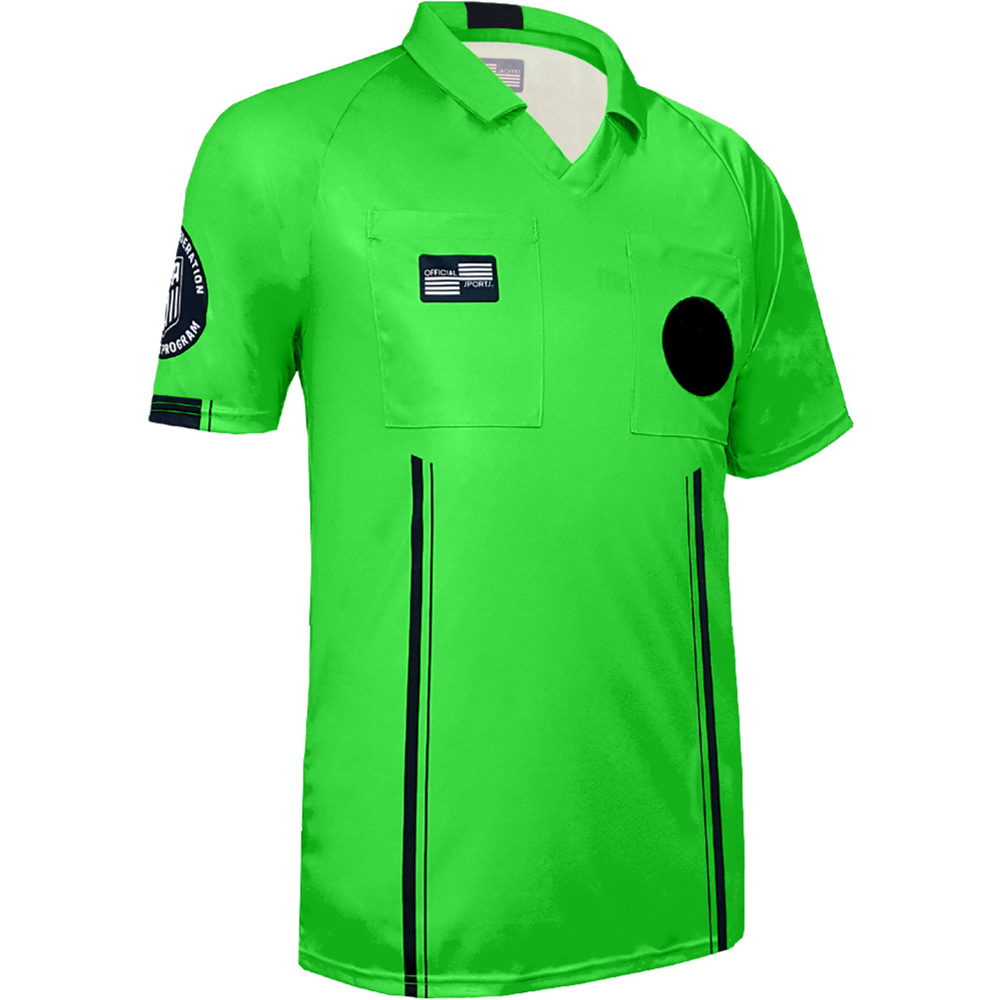
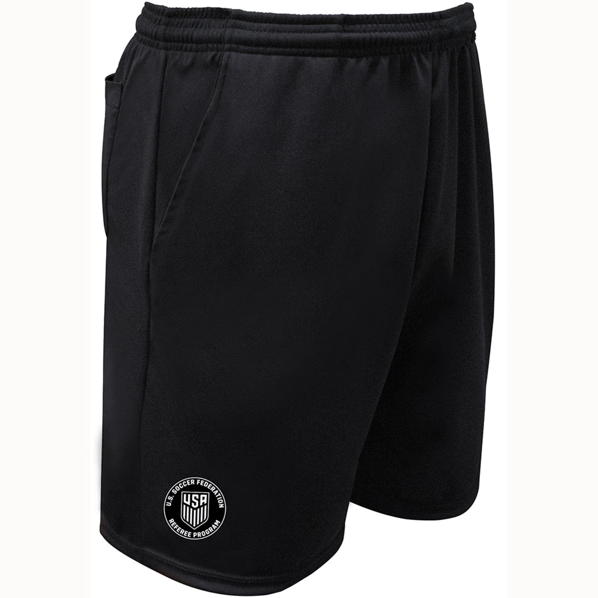
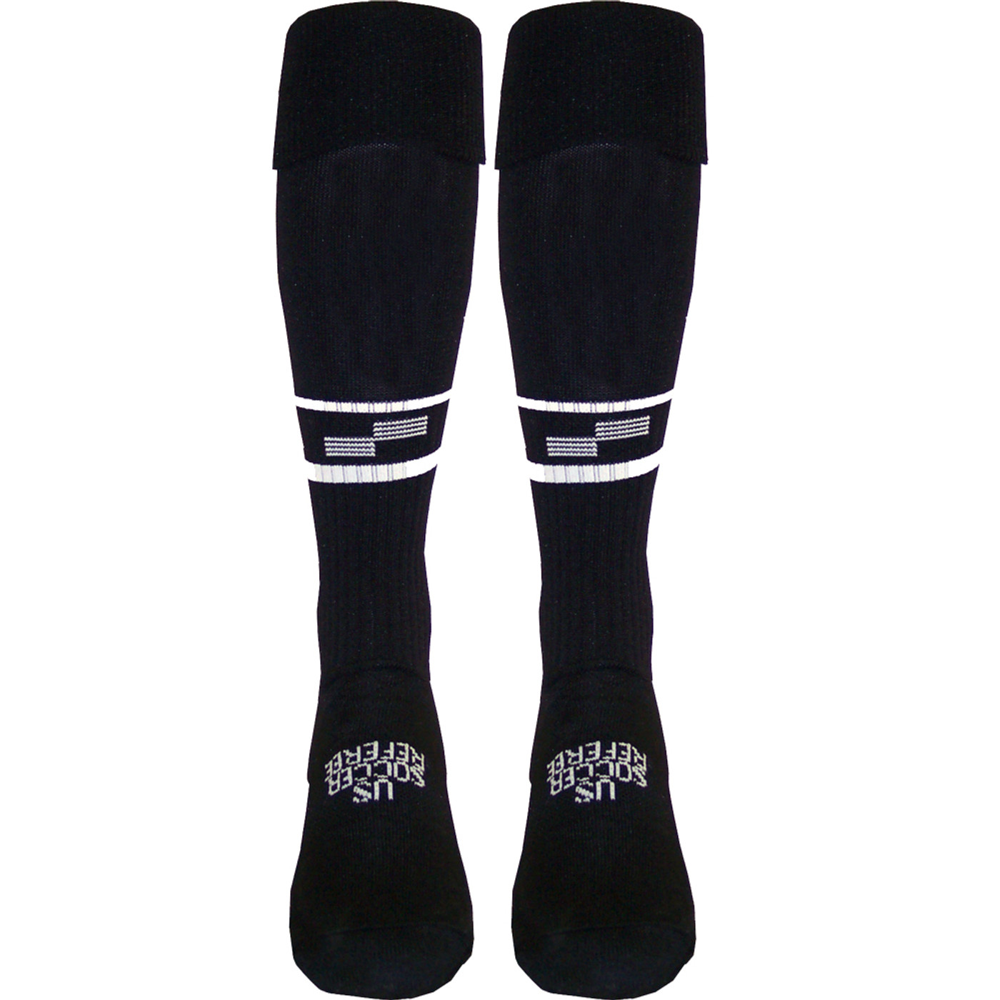
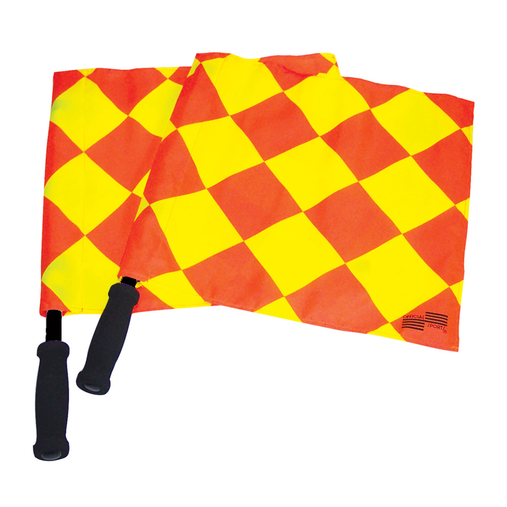
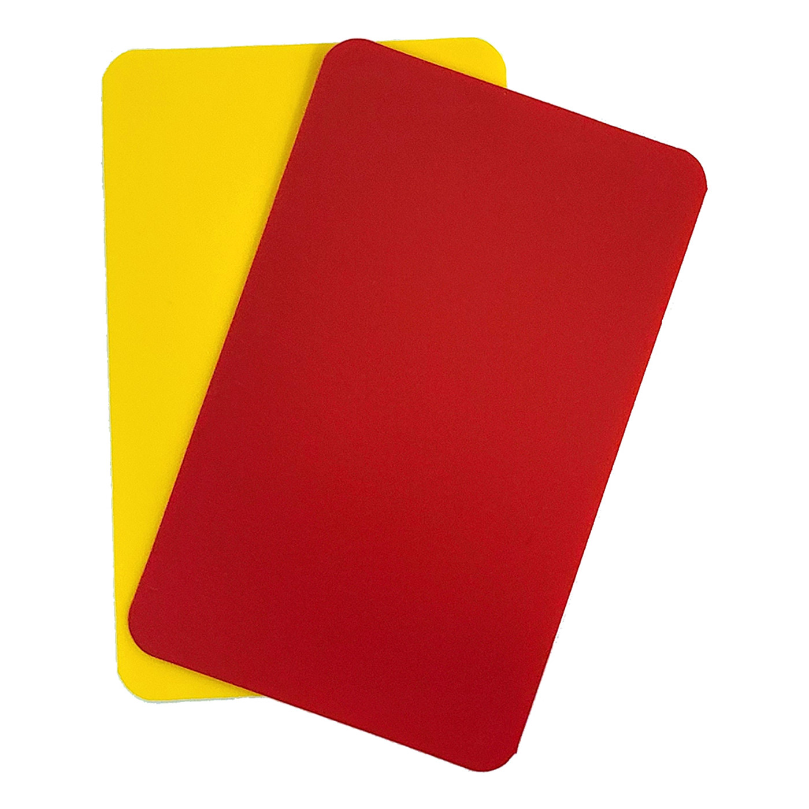
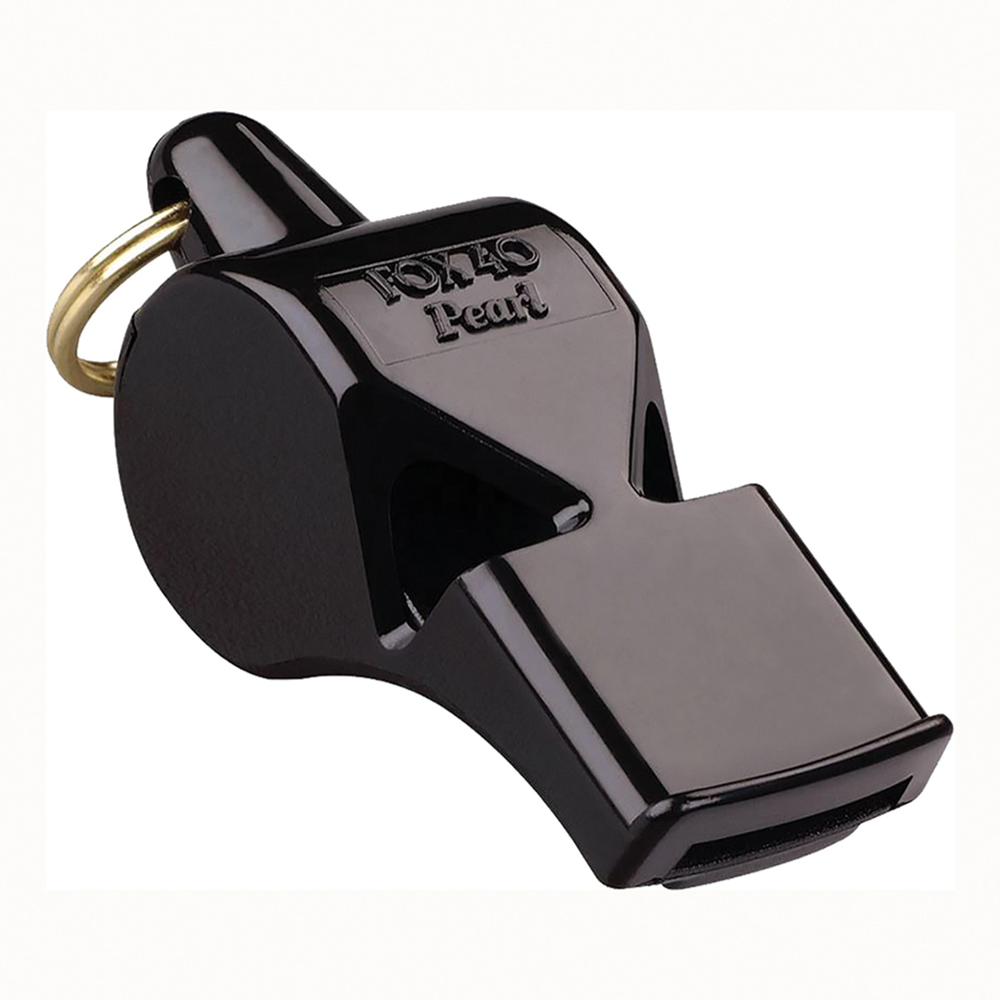
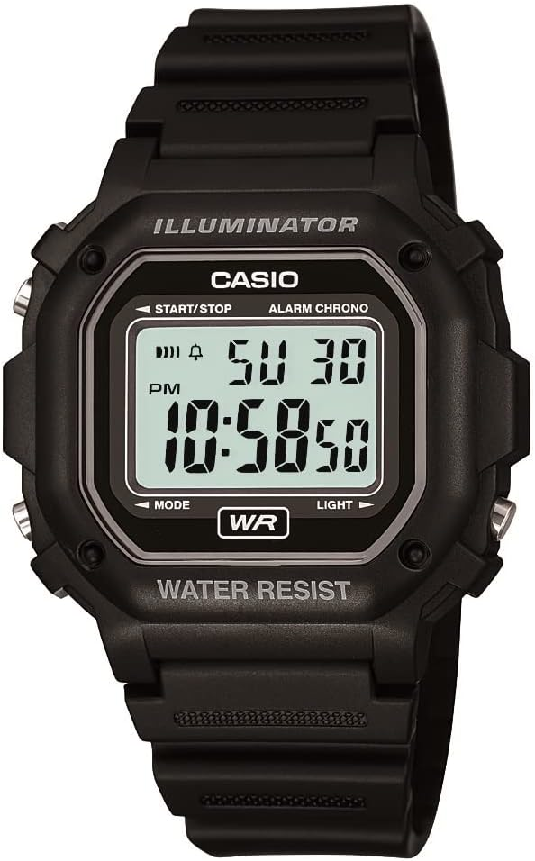

New Referee Information
We are holding classes in fall for new referees interested in being a part of our program. Referees must be at least 14 years old by December 1.
Register for New Referee Class
Our classes consist of in-person lecture sessions followed by an exam. Knowledge of the Laws of Soccer will be extremely important in passing this exam. Those passing the exam will also be required to attend one or more field training session in late November.
The upcoming class schedule for new referees is as follows:
Referee Class: Saturday, September 30, from 11am - 1pm
Referee Class: Sunday, October 1, from 4pm - 6pm
Referee Field Training Class: Sunday, October 8, from 5pm - 7pm
Referee Test: Sunday, October 22, from 6pm - 8pm
All classes will be in person at Mullins Hall.
Background Check
ALL referees who will be 18 or older by the start of the season (December 1) must have a background check performed annually. In addition to being a CSYS requirement, the City of Coral Springs now mandates background checks. This can now be done on-line or by submitting a consent form in person. Click here for more information.
Recommended Gear
Uniform / Equipment List:
- Green Referee Shirt (We only wear the Green shirts - It can be long sleeve or short sleeve)
- Correct Black Shorts (Preferably with pockets. These MUST NOT BE too baggy like basketball shorts or hang below the knee)
- Correct Black Socks (Must have the correct socks that come up to the knee with 2 striped through the shin)
- Athletic Shoes (or MOSTLY Black)
- Black Athletic Watch (YOUR PHONE DOES NOT COUNT)
- Referee Patch (CSYS will provide)
- Duffle Bag for . . .
- Referee Flags
- A Couple Pens & Paper/Notebook
- Whistle, Yellow and Red Cards & Coin (a MUST for the Center Referees)
- Ref Quick Guide (Will be handed out before first games)







The below items are recommended for your referee bag as well . . .
Zip Lock Bag - for phone, wallet, keys and game cards if it is raining (keeps your stuff dry)
Towel, Water, Snack & Sunscreen.
Extra Whistle, Socks, Shorts and a Tshirt (Change of clothes for after the game - you should be sweaty)
When it is sunny, a BLACK baseball style cap may be worn. It needs to be ALL BLACK.
When it gets cold, a BLACK hoodie can be worn UNDER your referee jersey. WE DO NOT WEAR PANTS.
When it gets cold, BLACK gloves and/or BLACK Under Armour compression shirts/pants can be worn under your uniform.
When it is raining, a BLACK or CLEAR raincoat can be worn (Trench coats do NOT count - It must fit well so you can still run. Ponchos also do NOT count)
Cheaper Alternatives
GREEN Uniform Shirt First link
GREEN Uniform Shirt Second link
BLACK Shorts (They do not have to be these shorts but they do need to be ALL BLACK shorts with pockets preferably. The shorts should sit at the knee or above it so that your shirt can be tucked into the shorts. Basketball or other baggy shorts are NOT acceptable.)
https://www.amazon.com/Kro-Soccer-Referee-Short-Pockets/dp/B01LABRGTA/ref=sr_1_5?crid=3E31N1ZUXP4YG&keywords=soccer+referee+shorts&qid=1668002649&s=sporting-goods&sprefix=soccer+referee+shorts%2Csporting%2C140&sr=1-5
BLACK Socks (2 Stripe Socks ONLY)
https://www.amazon.com/Soccer-Referee-Socks-Stripe-Premium/dp/B07FP3HMW3/ref=sr_1_7?crid=RXC4Z4ZJ7RCV&keywords=soccer+referee+socks&qid=1668003304&s=sporting-goods&sprefix=soccer+referee+socks%2Csporting%2C184&sr=1-7
https://www.amazon.com/Soccer-Referee-Socks-Pair-Large/dp/B07V9Z2Q56/ref=sr_1_4?crid=RXC4Z4ZJ7RCV&keywords=soccer+referee+socks&qid=1668003344&s=sporting-goods&sprefix=soccer+referee+socks%2Csporting%2C184&sr=1-4
FLAGS (Multiple options. I would like everyone to purchase the flags with only 4 squares NOT the multiple checkered squared flags so we all match)
https://www.amazon.com/GOTOTOP-Referee-Linesman-Football-Training/dp/B09RF2VN48/ref=sr_1_26?crid=38IKP7IPBDE99&keywords=soccer+referee+flags&qid=1668002526&s=sporting-goods&sprefix=soccer+referee+flags%2Csporting%2C148&sr=1-26